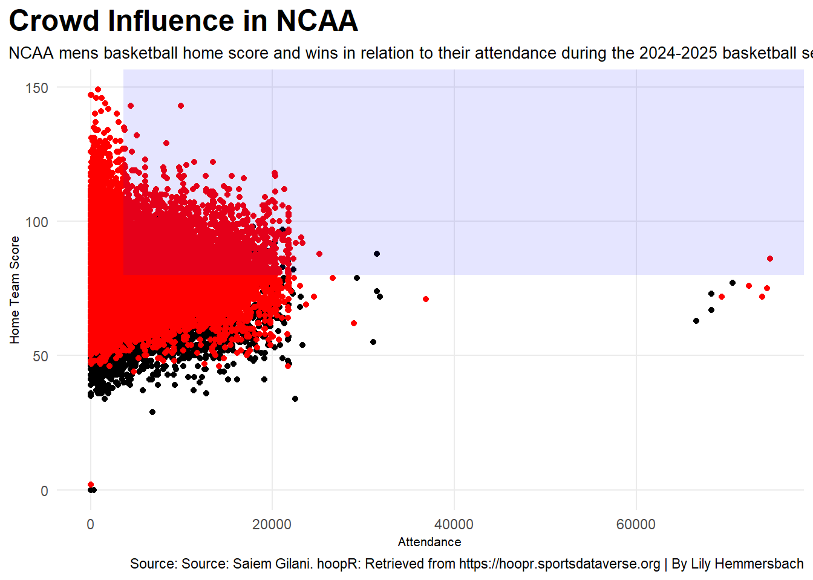
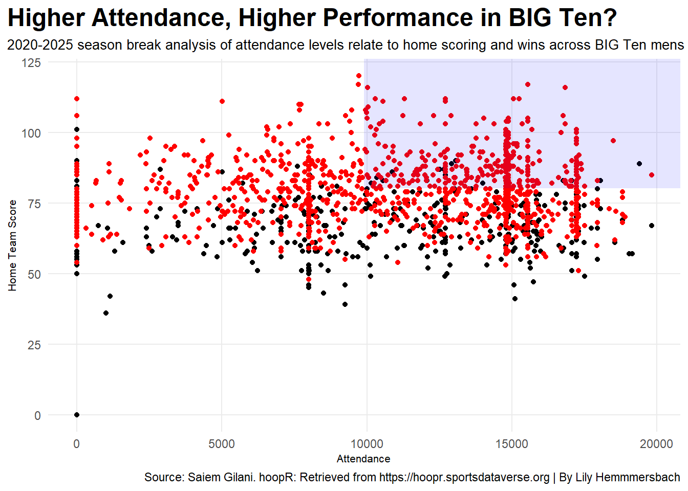
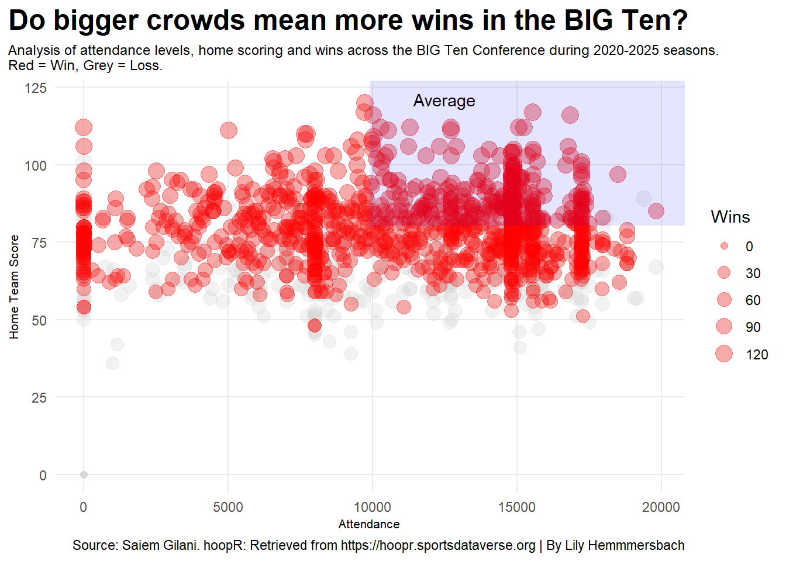

The question on my mind, do the size of crowds have an impact on team’s ability to win? Over the 2020–2025 seasons, we analyzed men’s basketball across the NCAA and more specifically the BIG Ten to explore how home attendance relates to scoring and wins. Using scatterplots of attendance versus home scores, we highlighted wins in red and losses in grey. The data shows a clear pattern. Teams that draw larger crowds often score higher at home and win more games. The shaded regions on the graphs emphasize teams performing above the average, reinforcing the idea that crowd support can boost performance.
Every dot represents a home game, and every red dot is a win. As attendance climbs, so do home scores, creating a clear zone in the upper right corner where big crowds and big performances collide. This graph isn’t just numbers, it’s proof fan power matters.
Code
ggplot() +geom_point(data=games, aes(x=attendance, y=home_score)) +geom_point(data=winnergames, aes(x=attendance, y=home_score), color ="red") +scale_size(range =c(2, 5), name="Wins") +geom_text(aes(x=40000, y=125), label="Average")+annotate("rect", fill ="blue", alpha =0.1, xmin =3626.747, xmax =Inf,ymin =80.06291 , ymax =Inf) +theme_minimal()+labs(x="Attendance", y="Home Team Score", title="Crowd Influence in NCAA", subtitle="NCAA mens basketball home score and wins in relation to their attendance during the 2024-2025 basketball season. Red = Win, Grey = Loss.", caption="Source: Source: Saiem Gilani. hoopR: Retrieved from https://hoopr.sportsdataverse.org | By Lily Hemmersbach" ) +theme_minimal() +theme(plot.title =element_text(size =18, face ="bold"),axis.title =element_text(size =8), plot.subtitle =element_text(size=9), panel.grid.minor =element_blank(),plot.title.position ="plot" )

Looking at five seasons of data, the trend is hard to ignore. As attendance climbs, so do home scoring averages and the red dots in this chart make it clear that wins stack up in the high attendance zone. Teams playing in front of 10,000+ fans consistently outperform those in quieter arenas. In short, the Big Ten home court advantage is real. The crowd really is influencing the game.
Code
ggplot() +geom_point(data=bigtengame, aes(x=attendance, y=home_score)) +geom_point(data=bigtenwingame, aes(x=attendance, y=home_score), color ="red") +scale_size(range =c(2, 5), name="Wins") +geom_text(aes(x=12500, y=121), label="Average")+annotate("rect", fill ="blue", alpha =0.1, xmin =9902.70, xmax =Inf,ymin =80.38565 , ymax =Inf) +theme_minimal() +labs(x="Attendance", y="Home Team Score", title="Higher Attendance, Higher Performance in BIG Ten?", subtitle="Analysis of attendance levels relate to home scoring and wins across BIG Ten mens basketball during 2020-2025 seasons.Red = Win, Grey = Loss. ", caption="Source: Saiem Gilani. hoopR: Retrieved from https://hoopr.sportsdataverse.org | By Lily Hemmmersbach" ) +theme_minimal() +theme(plot.title =element_text(size =18, face ="bold"),axis.title =element_text(size =8), plot.subtitle =element_text(size=9), panel.grid.minor =element_blank(),plot.title.position ="plot" )

It seems clear—fans matter. The bigger the crowd, the louder the support, the stronger the performance. For BIG Ten teams, bringing in fans might just be the secret weapon for racking up home wins.
Code
ggplot() +geom_point(data=bigtengame, aes(x=attendance, y=home_score, size = home_score), color="light grey",alpha = .3) +geom_point(data=bigtenwingame, aes(x=attendance, y=home_score, size = home_score), color="red",alpha = .3) +geom_text(aes(x=12500, y=121), label="Average")+scale_size(range =c(2, 5), name="Wins") +annotate("rect", fill ="blue", alpha =0.1, xmin =9902.70, xmax =Inf,ymin =80.38565 , ymax =Inf) +theme_minimal() +labs(x="Attendance", y="Home Team Score", title="Do bigger crowds mean more wins in the BIG Ten?", subtitle="Analysis of attendance levels, home scoring and wins across the BIG Ten Conference during 2020-2025 seasons.Red = Win, Grey = Loss.", caption="Source: Saiem Gilani. hoopR: Retrieved from https://hoopr.sportsdataverse.org | By Lily Hemmmersbach" ) +theme(plot.title =element_text(size =18, face ="bold"),axis.title =element_text(size =8), plot.subtitle =element_text(size=9), panel.grid.minor =element_blank(),plot.title.position ="plot" )

This table ranks teams by their average home score and highlights performance tiers with color. Dark blue for the top 5 teams and grey for the rest.
The top teams like Iowa and USC, stand out immediately, not just in score but in how consistently they win when playing at home. The middle tier teams are competitive, but often fall just short of the elite. Meanwhile, the bottom teams struggle to consistently hit high scores, showing how hard it is to dominate in the Big Ten.
Code
homewins|>arrange(desc(home_score)) |>gt() |>cols_label(home_display_name ="Team Name",home_score ="Average Score", avgwinnergone ="Average Attendance" ) |>tab_header(title ="How does the BIG Ten attendance relate to wins?",subtitle ="The average wins in mens basketball across the 2020-2025 season in the BIG Ten." ) |>tab_style(style =cell_text(color ="black", weight ="bold", align ="left"),locations =cells_title("title") ) |>tab_style(style =cell_text(color ="black", align ="left"),locations =cells_title("subtitle") ) |>tab_source_note(source_note =md("**By:** Lily Hemmersbach | **Source:** Saiem Gilani. hoopR: Retrieved from https://hoopr.sportsdataverse.org") ) |>tab_style(locations =cells_column_labels(columns =everything()),style =list(cell_borders(sides ="bottom", weight =px(3)),cell_text(weight ="bold", size=12))) |>opt_row_striping() |>opt_table_lines("none") |>tab_style(style =list(cell_fill(color ="blue"),cell_text(color ="white", weight ="bold") ),locations =cells_body(rows =rank(-home_score) <=5 ) )
How does the BIG Ten attendance relate to wins?
The average wins in mens basketball across the 2020-2025 season in the BIG Ten.
Across all the graphs, one thing is clear, bigger crowds often mean higher scores and more wins. When the stands are full, home teams seem to feed off the energy, performing at their best. For coaches, players, and fans, this shows that fan support isn’t just for hype it’s a real competitive advantage. In the BIG Ten, the crowd can be the difference between a close game and a decisive home victory.